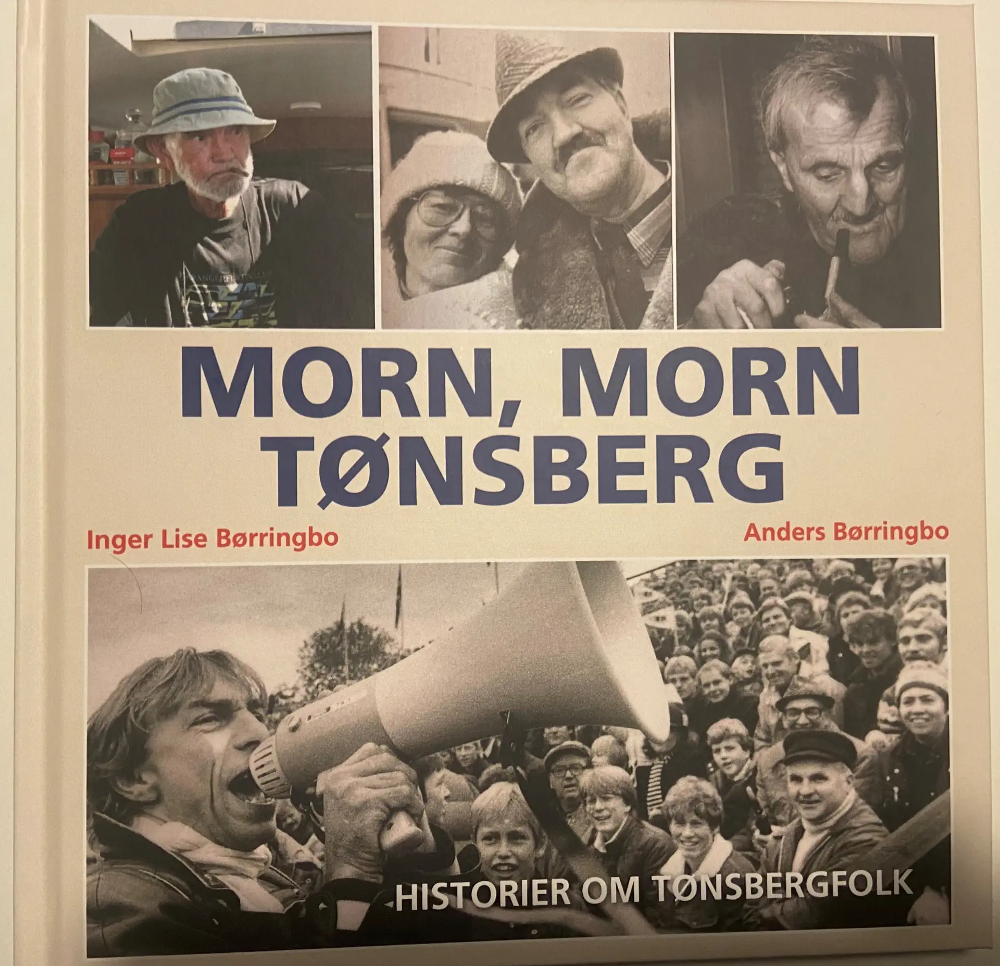

Boka «Morn, morn Tønsberg» er ute. Her får du historier om Jahn Teigen, Odd Børretzen, originalene
Svegernes og Finmalern og mange flere. Boka er bygd rundt intervjuer Inger Lise Børringbo gjorde for
Tønsbergs Blad. I tillegg er det tekster av Anders Børringbo fra samme periode, om bla barn- og
ungdomstid midt i byen i Gråbrødregaten.
«Morn, morn Tønsberg» er perfekt for den som har et hjerte for byen under fjellet, eller rett og slett
vil lære mer om den.

Hvordan bestille boka
Send Anders kr 298 på vipps-nummer 726457
(tallet er trykkbart).
Skriv adressen din i meldingen, så
sender vi boken i posten. Bildet viser et eksempel av hvordan det skal se ut:
Mer om boka!
Inger lise Børringbo, oppvokst i Presterødåsen, var journalist i Tønsbergs Blad i flere tiår, fra midten
av 60-tallet til hun sluttet i 2007. Hun prøvde å skildre bredden i byen, fra ordføreren til han som sov
under en benk i Stoltenbergparken, til julebordet for de som var litt annerledes i Øvre Langgate. Mange
av disse intervjuene er med.
Inger Lise var også formann i bygningsrådet og med i bystyret en periode. Her ble hennes viktigste kamp å
bevare byen og hindre riving. Historien om hvordan hun var med å redde sjøbodene og bryggene fra riving,
i dag Tønsbergs indrefilet, er sentral i boka.
Anders Børringbo vokste opp i Gråbrødregaten mildt i byen. Rett i nærheten hang han utenfor den gamle
brannstasjonen på Torvet og ventet på utrykning. På 80-tallet fulgte han fotballeventyret med Eik på
øverste nivå og så Jahn Teigen lande med helikopter på Gressbanen. Disse og flere andre historier er
med.
Boka har dessuten en annen sentral, rød tråd. Inger Lise skrev mye om kultur, på dette feltet har det
skjedd en enorm utvikling i byen de siste tiårene. Teater, kunst, bevaring. Les og kos deg!